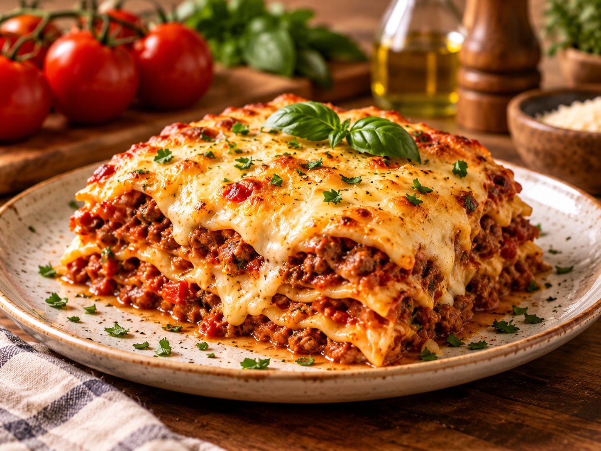

Massas
Lasanha à Bolonhesa
1h30min
Médio
Uma deliciosa lasanha à bolonhesa, perfeita para reunir a família e aproveitar uma refeição especial.
Dados fornecidos por Spoonacular .
Ingredientes
Modo de preparo
Informações adicionais
Tempo de preparo
1h30minRendimento
6 porçõesDificuldade
Médio